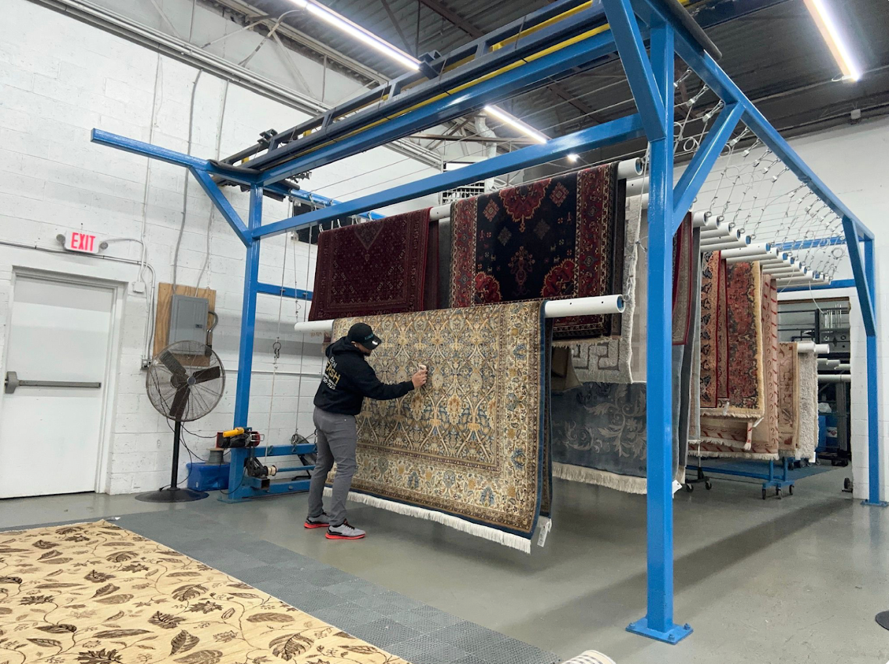
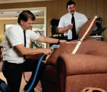

The furniture in your home sees a lot of wear. When was the last time it had a proper deep clean? Our steam upholstery cleaning services go beyond surface-level vacuuming, removing deep-seated dirt. Also removes allergens, and odors with 100% non-toxic, pet- and kid-safe cleaning solutions.


We don't just clean, we restore freshness. Our equipment and techniques are designed to safely clean and lift contaminants from your upholstered furniture while preserving its texture and color.
Stains and odors are neutralized. This leaves your furniture visibly brighter and fresher smelling. Scotchgard® treatment can also be added to help extend the life of your furniture and keep it looking cleaner for longer.
Call Now: (717) 454-7347We clean sofas, sectionals, loveseats, armchairs, recliners, ottomans, dining room chairs, and most upholstered furniture. We work with microfiber, cotton, linen, velvet, and most fabric blends.
Yes. We test each piece before cleaning and select the appropriate method based on the fabric type and construction. Our goal is always to restore freshness while fully preserving your furniture.
Most individual pieces take 30 to 60 minutes. A full living room set typically takes 2 to 3 hours. Drying time varies by fabric but is usually 2 to 6 hours.
Yes. We treat most common stains including food, beverage, and pet stains using solutions matched to the fabric type. Results depend on the age and nature of the stain, but we achieve excellent results in most cases.
Yes. We can apply Scotchgard after cleaning to create a protective barrier that resists future stains and makes routine upkeep easier, extending the life of your furniture.
Providing safe, deep-clean upholstery care across Central Pennsylvania, including Harrisburg, York, Lancaster, Lebanon, and Hershey.
Mon - Fri: 8am - 7pm
Saturday: 10am - 5pm
Sunday: 10am - 3pm
© 2026
Bear Carpet Care. All Rights Reserved.
Designed by HTML Codex and Maintained by
WebEaze.